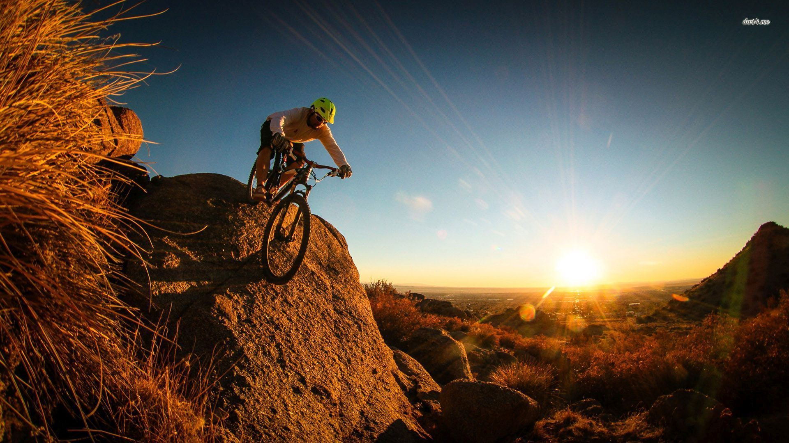

Por que elegir ciclismo de montaña?
El ciclismo aleja el estrés, inyecta endorfina y serotonina, sube tu estado de ánimo y la autoestima. Además, duermes más profundamente por su efecto relajante. Activa el cerebro. No solo piensas mejor y con claridad sino que a nivel cerebral, hace crecer la densidad de la materia blanca.

Amor por la bicicleta
Tu bicicleta se convierte en esa amiga inseparable que no solo te ayuda a mejorar tu salud sino que es complice de cada aventura y aprendizaje.